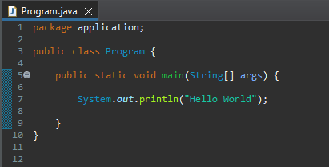

A linguagem de programação Java foi desenvolvida por James Gosling e sua equipe na Sun Microsystems nos anos 1990. O projeto tinha como objetivo criar uma linguagem de programação que fosse independente de plataforma, portável e adequada para o desenvolvimento de software embarcado em dispositivos eletrônicos.
A primeira versão pública do Java, conhecida como JDK 1.0 (Java Development Kit 1.0), foi lançada em 23 de janeiro de 1996. Desde então, a linguagem Java passou por várias atualizações e melhorias.
Algoritmos
Um algoritmo é um conjunto finito e ordenado de instruções ou regras bem definidas que levam à solução de um problema específico. Essas instruções descrevem um processo passo a passo que, se seguido corretamente, produzirá a saída desejada a partir de dados de entrada específicos.
Primeiro programa

System.out.println("") é um comando, também conhecido como função, que exibe algo para o cliente. Esse comando causa quebra de linha, ou seja, o próximo comando só será exibido na próxima linha. Para evitar essa quebra de linha, se pode usar o comando System.out.print("").
Variáveis
Variáveis são espaços de armazenamento nomeados que representam valores em um programa de computador. Em java, seus tipos são: int (números inteiros), float e double (números com casas decimais), boolean (para verdadeiro ou falso), char (caracteres individuais), String (caracteres de texto), etc.
Lendo dados do teclado
Para ler dados do teclado, precisamos importar a Classe "Scanner"
Operadores matemáticos
Operador
Operação
Exemplo
+
Soma
2 + 2 = 4
-
Subtração
10 - 9 = 1
*
Multiplicação
2 * 2 = 4
/
Divisão
9 / 3 = 3
//
Módulo da divisão
4 // 2 = 0
Estrutura condicional
As estruturas condicionais em programação são usadas para tomar decisões com base em certas condições. Em Java, existem principalmente duas formas de implementar estruturas condicionais: a declaração "if" e a declaração "switch". Vamos dar uma olhada em ambas.
A declaração "if" é usada para executar um bloco de código se uma condição for verdadeira. A declaração "else" pode ser usada para fornecer um bloco de código a ser executado se a condição for falsa. E a declaração "else if" pode ser usada para verificar soluções encadeadas.
A declaração "switch" é útil quando você tem várias condições a serem testadas em relação a uma única variável.
Operadores de comparação
"==" - Igual a
"!=" - Diferente de
">" - Maior que
"<" - Menor que
">=" - Maior ou igual que
"<=" - Menor ou igual que
IF com "and" e "or"
Utilizado para testar duas condições simultâneamente. Ao utilizar o and, as duas condições precisam ser verdadeiras para entrar na condição, já com o or apenas uma condição precisa ser verdadeira.
Laços de repetição
Existem várias formas de implementar estruturas de repetição (loops) para executar um bloco de código repetidamente até que uma condição seja atendida. Os loops mais comuns são o for, o while e o do-while. Aqui estão exemplos de cada um:
FOR
O loop for é frequentemente usado quando o número de iterações é conhecido antecipadamente.
O primeiro indíce é o inicializador, o precisa ter um valor inicial. O segundo indíce representa a condição, e o terceiro representa o contador.
While
O loop while executa um bloco de código enquanto uma condição específica for verdadeira.
Nesse caso, o laço será executado enquanto a váriavel "contador" for menor, ou igual a 5.
Do-While
O loop do-while é semelhante ao while, mas garante que o bloco de código seja executado pelo menos uma vez antes de verificar a condição.
Conversa informal sobre como está a linguagem Java atualmente
Conclusão
Este é apenas o começo da sua trajetória para se tornar um programador habilidoso. Se você chegou até aqui, já não é mais um iniciante e está pronto para buscar novos desafios. Conheça nossos outros cursos :